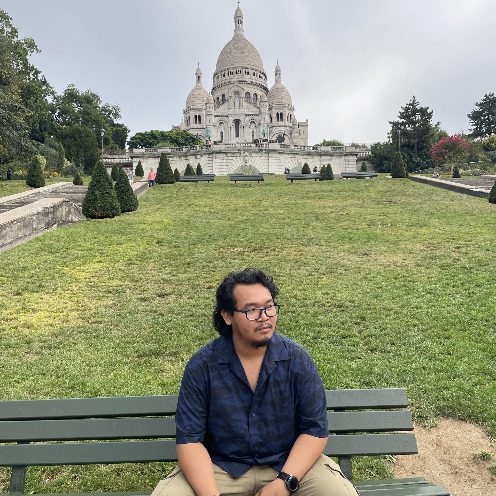

About Me
Top Songs
- Unbreak by KATIE
- BAD4US by Sor, J.Tajor, WILD
- Party in Bali(PIB) by AGNEZ MO, Jay Park
- IS THIS LOVE by XG
- I GOT YOU by TWICE, Lauv
- Underground by f5ve
- Túlbonyolítod by Mario
My name is Jayson Malicse, but you can call me Jay. I lived in Laguna, Philippines and currently working in the neighboring province. I was a SMT (Suface Mounting Technology) Maintenance Engineer in my previous years and now, I am transitioning to a Junior Software Development Engineer. Although I'm still using tools and maintaining the functionality and quality of the system, the difference was I was using physical tools and machines(or hardwares) and now I'm using software tools and applications. It's a huge step but it felt good because I like coding.
Now, I am learning the basics needed by a Software Development Engineer. It was a little bit confusing but I can keep up with the subjects because I do have a little background and understand some of the terms and how do they function.
I know I've been talking about the work, but it has been a huge breakthrough for me and wanted to share it. Don't worry! I will also be sharing some of my experience, and maybe some of the things I learned about coding.
Quiche is a savory pie
"Goulash" in English
A flatbread
Sold most on Holidays
Also known as "Shawarma" in certain Asian countries
As I have worked abroad, specifically in Hungary, I had an opportunity to travel to other countries in Europe. I'll share you what I have experienced there.
HTML5, CSS3, and JavaScript
CSharp(C#)